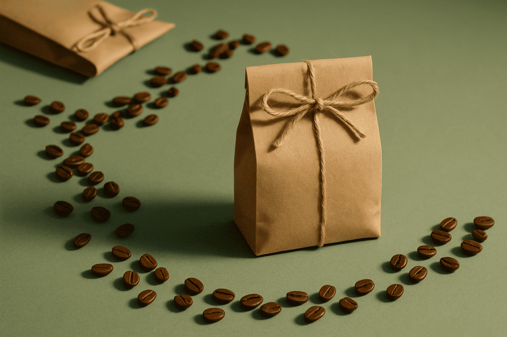
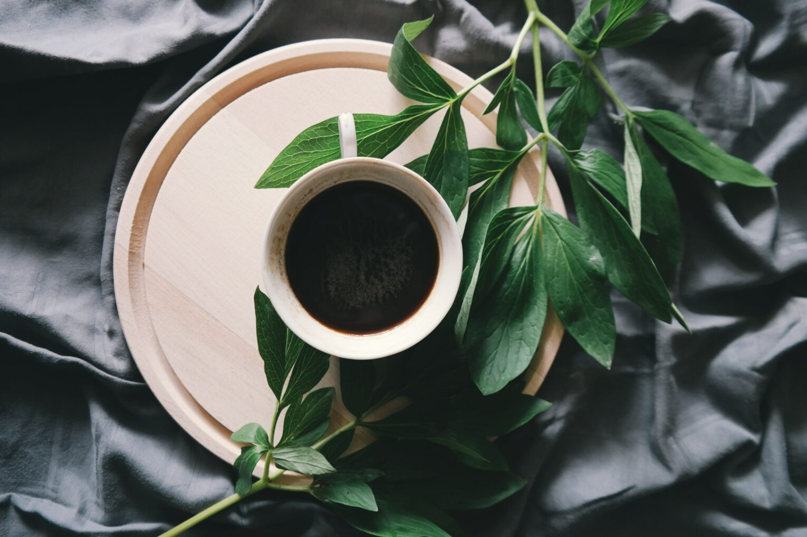
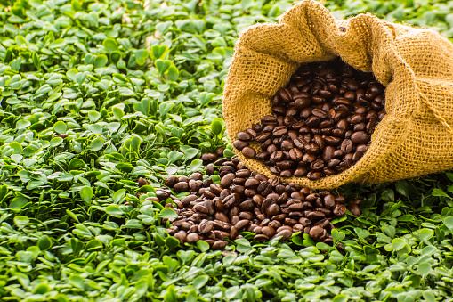
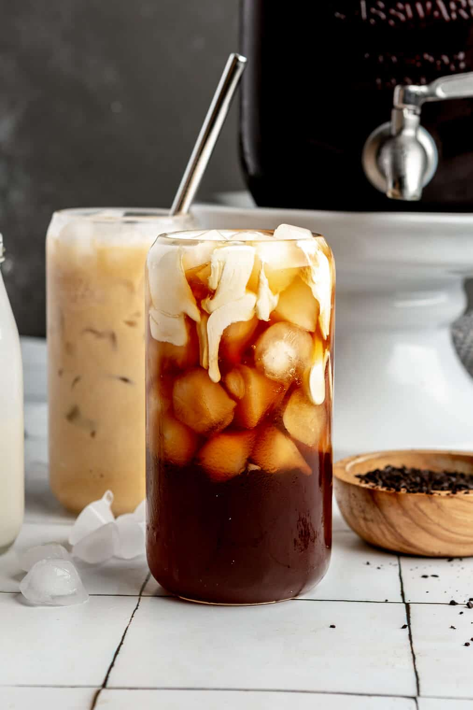

Our Roastery
Situated next to the Webster Botanical Garden, the Botanical Bean Roastery provides a naturally inspired experience. With beans and grounds sourced from ethically and environmentally conscious growers, both locally and abroad. Our products seek instill a sense of peace that only nature’s embrace can provide.
Through partnership with the Webster Botanical Garden, visitors to either business will receive coupons for tickets and products, along with flyers for featured events.


Our Location
1842 Schlegel, Webster, NY 14580
Phone Number
(555)-555-5555
Email Address
contact@botanicalbean.com
Hours
Monday - Friday: 12:00 PM - 2:30 PM & 7:00 PM - 10:30 PM
Saturday: 7:00 PM - 11:00 PM
Featured Products
Nature’s Embrace (Medium Roast)---$14.99/lb
Inducing a feeling of comfort, this roast provides a smooth and serene warmth.

Summer’s Crest Cappuccino---$5
Just like the peak of summer, this drink provides a sense of enlightening and uplifting energy.

First Light Clarity (Light Roast)---$14.99/lb
To emerge from the morning fog, this roast lightens the spirit and mind for the day ahead.

Earthly Motivation Macchiato---$6
Straight from mother earth’s cradle, gain a sense of security and potential.

Pumpkin Crepe---$9
Manifest the essence of Autumn, made with fresh cream and topped with chocolate drizzle.

Final Frost Brew---$7
Like the final frost before the beginning of spring. This brew is just the beginning of a good day’s growth.
